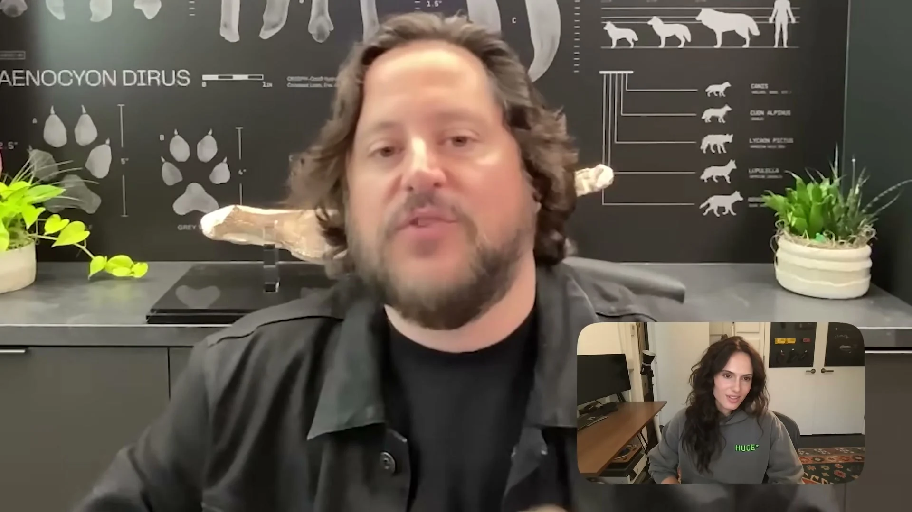

HUGE* intro sequence
Motion reference from Cleo Abram’s “The Real Reason We Should Revive Extinct Animals”, source time 1:07–1:13.
Frame by frame
Use the slider or Previous and Next buttons. Select the image to open the full 1080p frame.

Sequence at a glance
Seven points across the six seconds. Select any image to jump into the frame viewer.